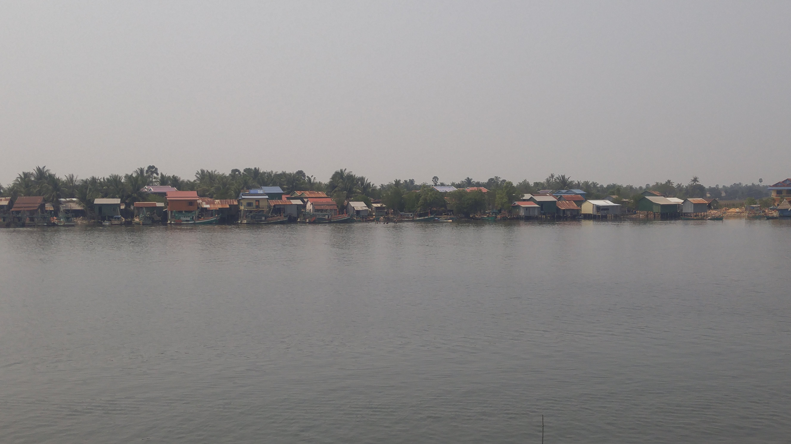

Go Back
Kampot

Kampot is a smaller laid back town in Cambodia. It's a very easy going relaxing place to visit which doesn't feel like it's only there to cater to tourists. The town sits along side the Preaek Tuek Chhu River which allows for some water activities. The area is famous for its pepper and salt fields. Kampot is actually one of my favourite places to visit in Cambodia even though it doesn't necessarily have any major tourist attractions. The vibe is laid back, the people friendly and the entertainment is good. It's easily accessible from other popular tourist areas like Phnom Penh or Sihanoukville by bus or private car. Here are some of my recommendations for Kampot.
One activity I wished I had done while I was in Kampot was go to the waterpark at Acadia Hostel. This is a hostel located right along the river and it's known for it's entertaining water activities and social atmosphere. This is one of my priorities if I ever visit Kampot again and from what I've heard is a great way to spend an afternoon in a far away place. As mentioned it's a hostel so you can also just book your accomodation here though when I visited it was fully booked. Perhaps this one requires early booking as opposed to just showing up.
The town runs off its outdoor markets which are scattered throughout the town. You can find basically everything consumed in daily life here ranging from meat to vegetables to common products like jewelery and house appliances. As Kampot is famous for its pepper you can also shop around and buy some unique pepper right from the region. The Samaki market was the largest one I remember and is located near the Durian Roundabout (pictured below). Not only is it a place to go for shopping but it gives you a window into daily life in Kampot.
The riverside along Kampot is one of the best places in town for activities. The walkway is tranquil and there isn't much traffic or noise. On the opposite side of the street from the river you'll find the largest range of restaurants and bars in the town. This is the main area that tourists can be found in. You can also find the Kampot fish market here and boat restaurant/ bars. One memorable experience was going to one of the boat restaurants for some drinks and watching the live band play which turned into my friend singing for everyone on the boat. It's a cool and unique atmosphere for some drinks or a meal.
There is a large range of food and drink options in Kampot. As mentioned the road alongside the river offers many different options for restaurants and bars serving anything from local dishes to western favourites.
I already mentioned Acadia was fully booked when I visited so I ended up staying at Jack's Guesthouse. This had to have been one of the best value hostels I've ever stayed in. We had huge soft mattresses under large fans which was very comfortable in the 30 degree heat. Jack was friendly and offered all services needed for a successful trip including motorbike rentals, tour suggestions and food at the restaurant. The cost was a whopping 2 usd per night. It was a great place to meet travellers and base myself out of while staying in Kampot. There are other famous franchises here like Mad Monkey and Onederz as well.